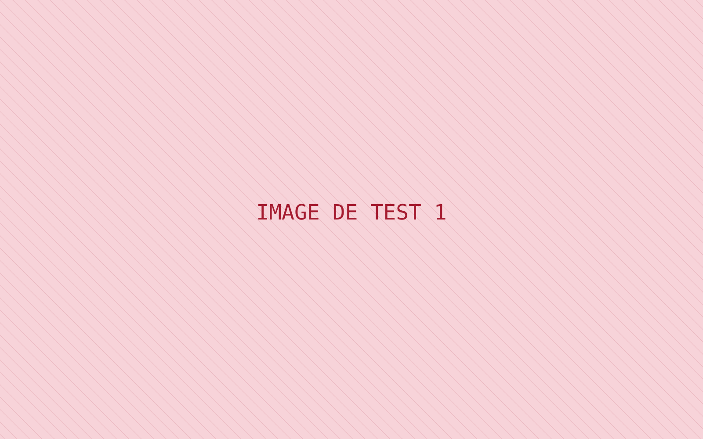
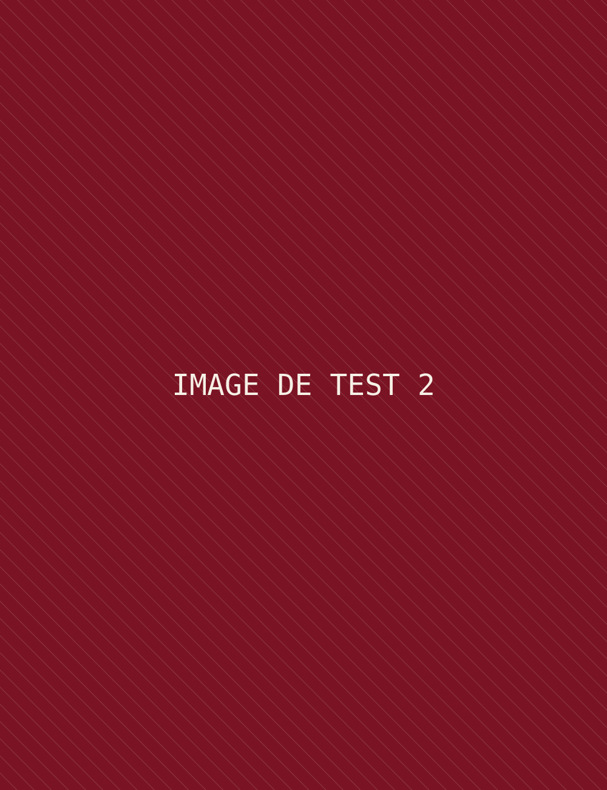
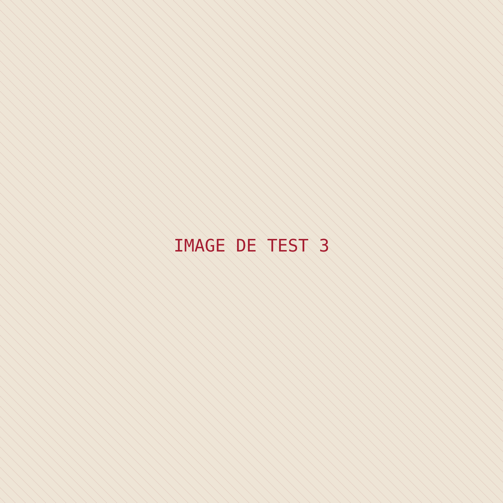

Charte graphique
Toutes les briques visuelles du carnet, réunies pour les valider. Les réglages se font en haut de css/style.css.
01
Papiers et encres
02
Cinq écritures
La plume — Homemade Apple
Le décor pensé, dessinéCapitales — Georgia
Chapitre 02 · la maquetteTexte — Playfair Display
Le texte courant, pour la lecture longue. L'italique pour les chapeaux et sous-titres. Les liens ressemblent à ceci.
Machine — Special Elite
FIG. 02.1 · échelle 1:50 · 09.11.2026Crayon — Reenie Beanie
à vérifier avec la mise en scène ! → [à coter]03
Les tampons
04
Les objets du carnet
photo à venir
polaroid à venir
papier ligné, bord déchiré
papier millimétré
05
Tester l'agrandissement
clique sur une image · flèches pour naviguer · Échap pour fermer





